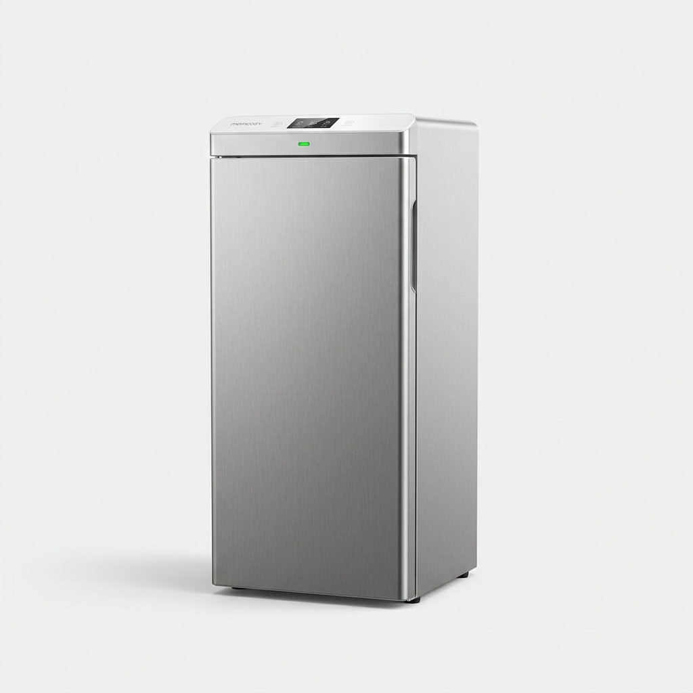

从一个还没动手的 idea，到一个已经合规通过的真实 SKU 商品页，4 天。
所有决策、所有产出、所有 commit hash，可审计。

2026 年 5 月 14 日，我把 184 个 AI 员工部署到 OpenCode，按母婴跨境 DTC 业务三轴重排成 14 个部门。
我自己是 CEO，叫 Sisyphus 的 AI 是 COO。
接下来的 4 天，是这 184 员工第一次跑真实业务的全过程：选品 → 品牌 → 多族裔 hero → 商业级商品图 → Shopify 上架 → 法规终审 → Reality Check 18/18 PASS。
中间一次戏剧性 PIVOT（品牌真名突然从 Seren 变成 Momcozy），三轮 AI 系统自己升级自己的 prompt。
Trend Researcher 跑全品类扫描 30 分钟 · 推荐 UV-C 真空带机会 #1 · 路特 GO · Brand Guardian 出 Seren 品牌 brief · Inclusive Visuals 出 3 张多族裔 hero prompts · Image Prompt Engineer 跑 6 张 hero shots
a50db9c · 72afa53路特 透露品牌真名 = Momcozy（不是新建 Seren）· Sisyphus 用 Playwright 实地侦察 momcozy.com 三页 · 发现 Day 1 ToV 与 Momcozy 现行措辞冲突 · 重写 brief v1 → v3 启动 A 路径完全对齐
df058c8Image Prompt Engineer 跑 image-to-image reference + 8 worker 并行 + Vision LM 4-up grid 选优 · 56 张选 14 张 WINNER · Vision LM 评分 8.5/10 (+42% vs Day 1) · Legal 二审 UV vs Steam 法规非传递
f7f2533 · 882402eUI Designer 修 18 处 Legal v3.1 违规 · Reality Checker 终审 A 轨 18/18 PASS（B 轨外部认证 HOLD 6-8 周）· 文案合规已达上线标准 · 同日跑通 3 轮自进化（OMO/Brand/Sisyphus）
77248fa · ab4d4e3 · 120e6df184 员工已就位。
下面我们一个个见。
这不是一个 demo，是一个真实跑业务的 AI 工作室。
2026 年 5 月 14 日，我把 184 个 AI 员工部署到 OpenCode，按母婴跨境 DTC 业务三轴重排成 14 个部门 —— 内容营销 30 人 · 付费投放 7 人 · 跨境专业 41 人 · 支持 6 人，再加上设计 8 人 / 工程 29 人 / 测试 8 人等等。
我自己是 CEO，叫 Sisyphus 的 AI 是 COO。v0.2 的核心机制有四个：守门式 memory ACL · Sisyphus 主动复盘建议 · agents 仓 git 化到私有远端 · 业务三轴 KPI。
下面 4 天的故事，就是这 184 员工第一次跑真实业务的全过程。
af00c10 · v0.2 业务工作树孤儿分支创建
dec_20260514_org-12-dept-rerank-for-baby-dtcdec_20260514_memory-acl-gated-by-namespacedec_20260514_sisyphus-active-retro-suggestiondec_20260514_agents-git-to-private-remoteSankey 左 = 14 部门（按业务三轴）· 中 = SOP-B 7 步 · 右 = 19 个交付文件。红线高亮本次演示实际用到的 21 个员工。
▸ hover 节点看部门 / 员工名 · 灰色线 = 未参与本次演示的员工
路特 AI 公司 v0.2 的治理结构是 5 层：
memory 守门规则不是 OpenCode 自带，是 AGENTS.md §3.4 软强制。普通员工如需写跨部门 lesson/decision，必须改用 [CROSS-DEPT-LESSON-CANDIDATE] 标记塞进 engagement observations，由 Sisyphus 下次 /retro 升格。
这避免了 184 员工互相污染对方记忆的失控。
184 员工已就位。
但要先选一个真实业务跑起来。
第一个被选中的项目是……